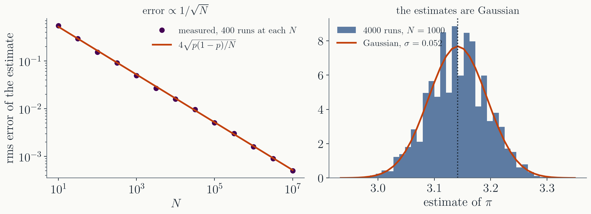
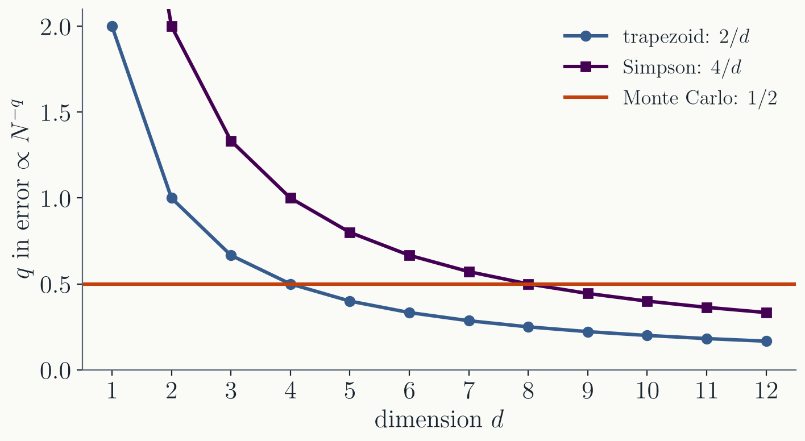
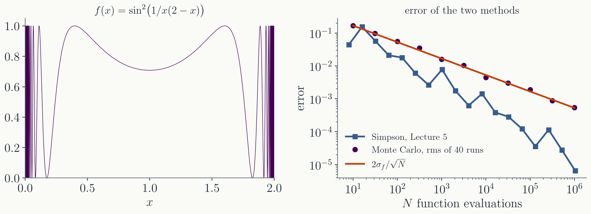
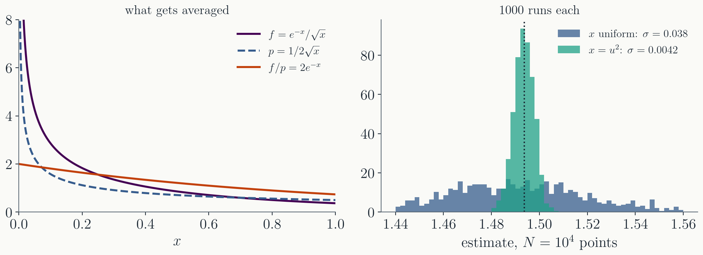
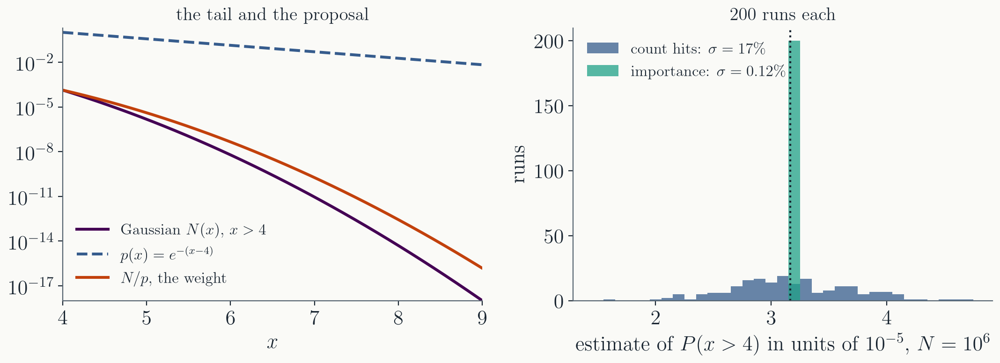

A random number generator is a deterministic recurrence on
a state. The seed fixes the whole sequence, which is what
makes a run reproducible.
We turned uniform numbers into samples
from other distributions with the inverse transform
$x = F^{-1}(u)$, with the Box-Muller transformation for the
Gaussian, and with rejection sampling under an envelope.
Today we use random points to compute
integrals. We will see why the error falls as $1/\sqrt{N}$ in
any number of dimensions, and how to place the points where the
integrand is large.
Part I · Monte Carlo integration
Averages over random points
Darts
Throw $N$ points uniformly into the unit square. The
fraction that lands inside the quarter circle estimates its
area, $\pi/4$, so
$$
I = \int_V f\,dV = V\,\langle f \rangle, \qquad
\langle f \rangle \approx \frac{1}{N}\sum_{i=1}^{N} f(\mathbf{x}_i),
$$
where the points $\mathbf{x}_i$ are drawn uniformly from $V$.
The darts are the special case in which
$f$ is $1$ inside the circle and $0$ outside, with $V = 1$.
The same formula works for any integrand,
any region, and any number of dimensions.
How wrong is it?
Each $f(\mathbf{x}_i)$ is a random number with mean $\langle f
\rangle$ and variance $\sigma_f^2 = \langle f^2 \rangle - \langle
f \rangle^2$. The average of $N$ independent ones has variance
$\sigma_f^2/N$, so
$$
I_N = I \pm V\,\frac{\sigma_f}{\sqrt{N}} .
$$
By the central limit theorem the estimates
are distributed as a Gaussian around $I$, so the $\pm$ above is
one standard deviation.
Check with the darts

At $N = 1000$ the formula predicts an error of $1.64/\sqrt{1000}
= 0.052$. The standard deviation of 4000 independent runs is
$0.052$.
The error from the same points
We can estimate $\sigma_f$ from the same points. If the loop
accumulates $\sum f_i$ and $\sum f_i^2$ along the way, then
Every run therefore comes with its own
error estimate, and a Monte Carlo result should always be
quoted with it.
Because the error falls as $1/\sqrt{N}$,
improving the accuracy by a factor of ten requires a hundred
times as many points.
Against quadrature
In Lecture 5 we found that the error of the trapezoidal rule
scales as $h^2$ and that of Simpson's rule as $h^4$. A grid in
$d$ dimensions with $n$ points per axis has $N = n^d$ points in
total, so $h \propto N^{-1/d}$ and the errors become $N^{-2/d}$
and $N^{-4/d}$. The Monte Carlo error scales as $N^{-1/2}$ in
any number of dimensions.

Where the dimensions come from
The configuration integral of a classical gas of $N$ atoms
runs over $3N$ coordinates.
The partition function of a hundred spins
is a sum over $2^{100}$ states, which is the same problem in
discrete form.
The phase space of a decay into four
particles has $8$ dimensions, and a path integral has one
dimension per time slice.
Every thermal average in statistical mechanics
is an integral of this kind, and we will come back to them in
the next lectures.
Smoothness is not required

The error formula for Simpson's rule contains $f'''$, and this
integrand has no derivatives at the two ends. The Monte Carlo
error depends only on $\sigma_f = 0.26$, and it follows the
formula.
The average still converges to $2$, but
the error estimate $\sigma_f/\sqrt{N}$ is meaningless, because
a single point at $x = 10^{-6}$ adds $1000/N$ to the
average.
An integrable singularity is therefore not
good enough for plain Monte Carlo. Part II shows how to
remove it.
With uniform $x$ the variance $\langle f^2
\rangle = \int_0^1 e^{-2x}/x\,dx$ is infinite, so the error
estimate cannot be trusted.
Choose instead $w = 1/\sqrt{x}$. Then
$p = 1/2\sqrt{x}$, $F = \sqrt{x}$, and the inverse transform
gives $x = u^2$. The ratio $f/p = 2e^{-x}$ lies between $0.74$
and $2$.
$$ I \approx \frac{2}{N} \sum_{i=1}^{N} e^{-u_i^2} . $$
The singularity, side by side

With $N = 10^4$ points and 1000 runs of each method, the spread
of the estimates falls from $0.038$ to $0.0042$. The accuracy
improves ninefold, which would otherwise require eighty times
as many points.
Example: a rare event
The probability that a unit Gaussian variable exceeds $4$ is
$P = 3.17 \times 10^{-5}$, about one draw in $32{,}000$.
If we draw $N = 10^6$ Gaussian numbers and
count those above $4$, we expect $32 \pm 6$ hits, an error of
$17\%$.
With importance sampling we draw $x = 4 -
\ln(1 - u)$, which is exponentially distributed beyond $4$
with density $p = e^{-(x - 4)}$, and average
$$ \frac{N(x)}{p(x)} = \frac{e^{-x^2/2 + x - 4}}{\sqrt{2\pi}} . $$
The rare event, side by side

With $N = 10^6$ and 200 runs of each method, the relative spread
is $17\%$ for counting and $0.12\%$ for importance sampling.
Reaching the same accuracy by counting would take $20{,}000$
times as many draws.
Choosing $p$
$p$ should have the shape of $|f|$, with the same peaks and
the same singularities.
$p$ must not have lighter tails than $f$.
Wherever $p$ falls off faster than $f$, the weight $f/p$
grows without bound, the variance is infinite again, and the
estimate looks converged while it is wrong.
$p$ must be cheap to sample, by an inverse
transform or a transformation from Lecture 21.
The Boltzmann weight as importance sampling
$$
\langle A \rangle = \frac{\int A(\mathbf{x})\,e^{-E(\mathbf{x})/kT}\,d\mathbf{x}}
{\int e^{-E(\mathbf{x})/kT}\,d\mathbf{x}}
$$
With uniformly chosen configurations,
almost every point has $e^{-E/kT} \approx 0$ and contributes
nothing.
If instead we draw configurations with
$p \propto e^{-E/kT}$, the weights cancel and $\langle A
\rangle \approx \frac{1}{N}\sum_i A(\mathbf{x}_i)$ is a plain
average over the sampled configurations.
But this $p$ lives in $10^{23}$ dimensions
and its normalization is unknown, so the inverse transform
cannot be used. We need a different way to draw from $p$.
Summary
A Monte Carlo integral is $I = V\langle f \rangle$ over
uniform points, with error $V\sigma_f/\sqrt{N}$ in any number
of dimensions. The same points give $\sigma_f$, so every
result comes with an error bar.
For smooth integrands quadrature is more
accurate below about $d = 4$ to $8$ dimensions, and Monte
Carlo above that, or whenever $f$ is rough. Monte Carlo
requires $\langle f^2 \rangle$ to be finite.
Importance sampling draws the points from
a density $p$ and averages $f/p$, with error
$\sigma(f/p)/\sqrt{N}$. A good $p$ has the shape of $f$ and
tails at least as heavy.